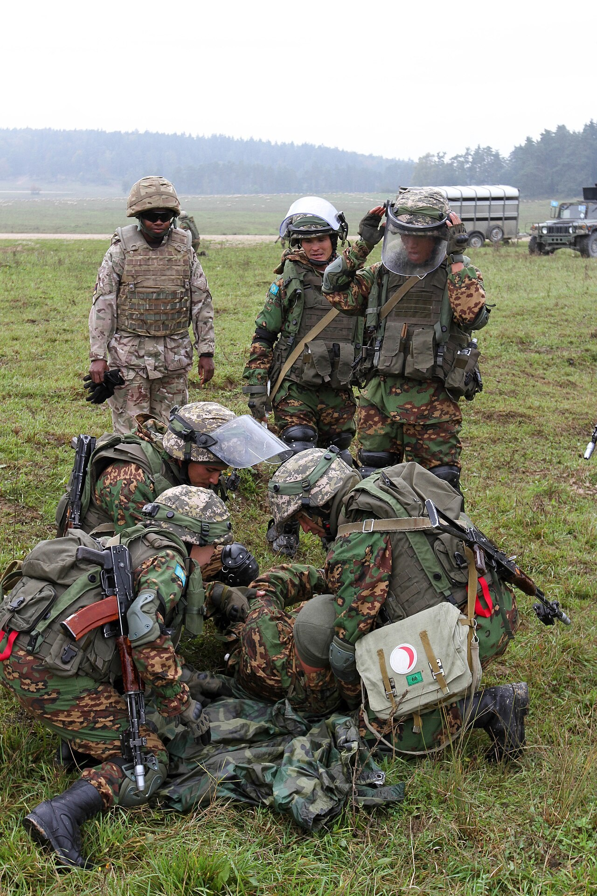

Әскери негіздер · №6 · Жарғылар Military Basics · No.6 · Charters Воинские основы · №6 · Уставы
Төрт жарғы әскери өмірдің барлық тәртібін айқындайды. Four charters define the entire order of military life. Четыре устава определяют весь порядок воинской жизни.

Жалпы әскери жарғылар — әскери қызметшілердің өмірін, тұрмысын, өзара қарым-қатынасы мен қызметін реттейтін нормативтік құжаттар жинағы. Олар әскери қызметшілердің құқықтары мен міндеттерін, командирлер мен бағыныштылардың қатынастарын нақтылайды және барлығына — солдаттан генералға дейін — бірдей міндетті. The general military charters are a set of normative documents that regulate the life, everyday routine, mutual relations and service of military personnel. They define soldiers' rights and duties and the relations between commanders and subordinates, and are equally binding on everyone — from private to general. Общевоинские уставы — свод нормативных документов, регулирующих жизнь, быт, взаимоотношения и служебную деятельность военнослужащих. Они определяют права и обязанности военнослужащих и отношения между командирами и подчинёнными и одинаково обязательны для всех — от солдата до генерала.
| №No.№ | ЖарғыCharterУстав | Не реттейдіWhat it regulatesЧто регулирует |
|---|---|---|
| 1 | Ішкі қызмет жарғысыInternal Service CharterУстав внутренней службы | әскери қызметшінің жалпы құқықтары мен міндеттері, күн тәртібі, ішкі тәртіп, тәуліктік нарядgeneral rights and duties of servicemen, the daily routine, internal order and the daily detailобщие права и обязанности военнослужащих, распорядок дня, внутренний порядок, суточный наряд |
| 2 | Тәртіптік жарғыDisciplinary CharterДисциплинарный устав | әскери тәртіптің мәні, көтермелеулер мен жазалар, оларды қолдану тәртібіthe essence of military discipline, rewards and penalties and the order of applying themсущность воинской дисциплины, поощрения и взыскания и порядок их применения |
| 3 | Гарнизондық және күзет қызметінің жарғысыGarrison & Guard Service CharterУстав гарнизонной и караульной службы | күзет атқару, қарауыл, нысандарды күзету, сақшының міндеттеріstanding guard, the guard detail, protection of facilities and the sentry's dutiesнесение караула, караул, охрана объектов, обязанности часового |
| 4 | Саптық жарғыDrill CharterСтроевой устав | саптар, саптық тәсілдер, қарумен және қарусыз қозғалыс, шеруformations, drill movements, movement with and without weapons, the paradeстрои, строевые приёмы, движение с оружием и без, прохождение торжественным маршем |
Әскери тәртіп — барлық әскери қызметшінің заңдар мен жарғыларда белгіленген тәртіп пен ережелерді қатаң әрі дәл сақтауы. Оның негізі — әрбір жауынгердің әскери борышын саналы түрде сезінуі. Military discipline is the strict and exact observance by every serviceman of the order and rules set by laws and charters. Its foundation is each soldier's conscious awareness of military duty. Воинская дисциплина — строгое и точное соблюдение всеми военнослужащими порядка и правил, установленных законами и уставами. Её основа — осознанное понимание каждым воином воинского долга.
Тәртіп жауынгердің бұйрықты дер кезінде орындауынан, қаруы мен мүлкін ұқыпты сақтауынан, киім үлгісі мен күн тәртібін сақтауынан көрінеді. Discipline is shown in the timely execution of orders, careful keeping of one's weapon and equipment, and observance of the dress code and daily routine. Дисциплина проявляется в своевременном выполнении приказов, бережном содержании оружия и имущества, соблюдении формы одежды и распорядка дня.
Жеке басшылық (единоначалие) — командирдің бағыныштыларға қатысты биліктің толық көлемімен қаруланып, шешімге дербес жауап беруі. Бұйрық қарсылықсыз, дәл әрі мерзімінде орындалады. Бұйрыққа шағымды тек оны орындағаннан кейін жасауға болады. Unity of command means that the commander is vested with the full authority over subordinates and bears personal responsibility for his decisions. An order is carried out without question, exactly and on time. An order may be appealed only after it has been carried out. Единоначалие — командир наделён всей полнотой власти по отношению к подчинённым и лично отвечает за свои решения. Приказ выполняется беспрекословно, точно и в срок. Обжаловать приказ можно только после его выполнения.
ДәлExactlyТочно
ҚарсылықсызWithout questionБеспрекословно
МерзіміндеOn timeВ срок
Тәртіптік жарғы бойынша көтермелеу — үлгілі қызмет үшін, ал жаза — теріс қылық үшін қолданылады. Кейбіреулері: Under the Disciplinary Charter, rewards are given for exemplary service and penalties for misconduct. Some examples: По Дисциплинарному уставу поощрения применяются за образцовую службу, а взыскания — за проступки. Некоторые из них:
| КөтермелеулерRewardsПоощрения | ЖазаларPenaltiesВзыскания |
|---|---|
| алғыс жариялауan expression of gratitudeобъявление благодарности | ескертуa remarkзамечание |
| бұрынғы тәртіптік жазаны алып тастауlifting an earlier disciplinary penaltyснятие ранее наложенного взыскания | сөгіс және қатаң сөгісa reprimand and a severe reprimandвыговор и строгий выговор |
| мақтау грамотасымен марапаттауa certificate of meritнаграждение грамотой | кезектен тыс наряд тағайындауan extra-duty assignmentназначение наряда вне очереди |
| бағалы сыйлық немесе ақшалай сыйақыa valuable gift or a cash bonusценный подарок или денежная премия | атағын төмендету, мерзімінен бұрын босатуreduction in rank, early dischargeснижение в звании, досрочное увольнение |